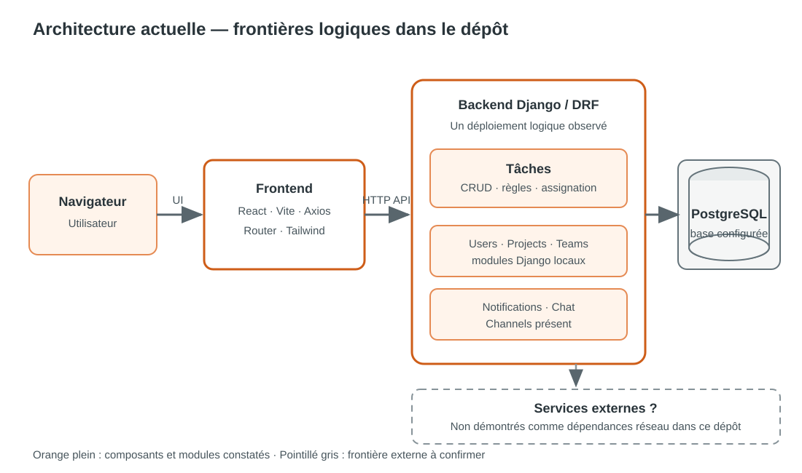
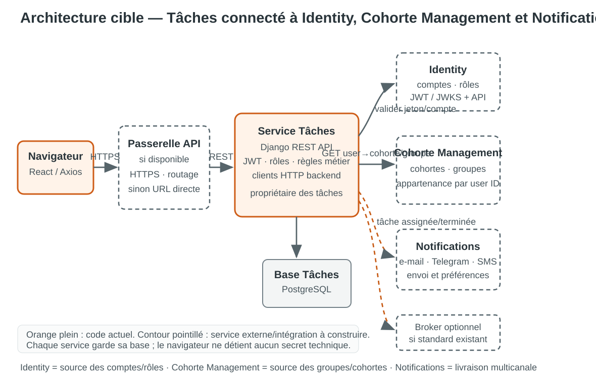
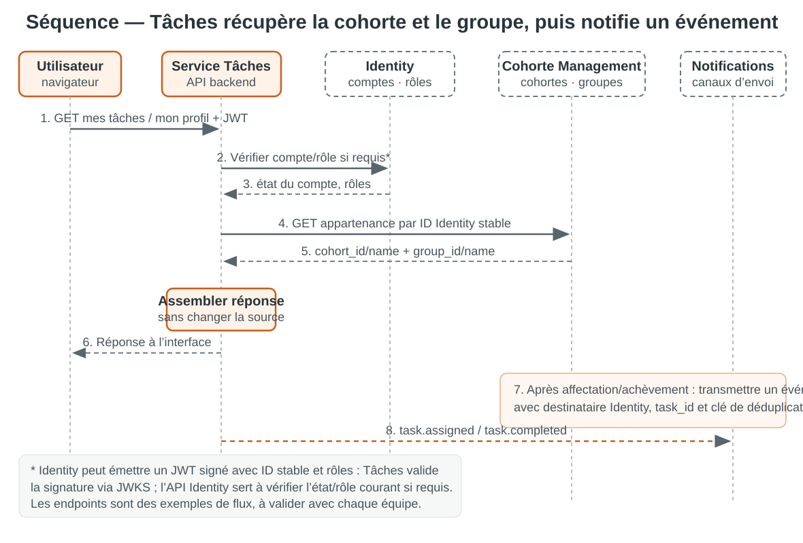
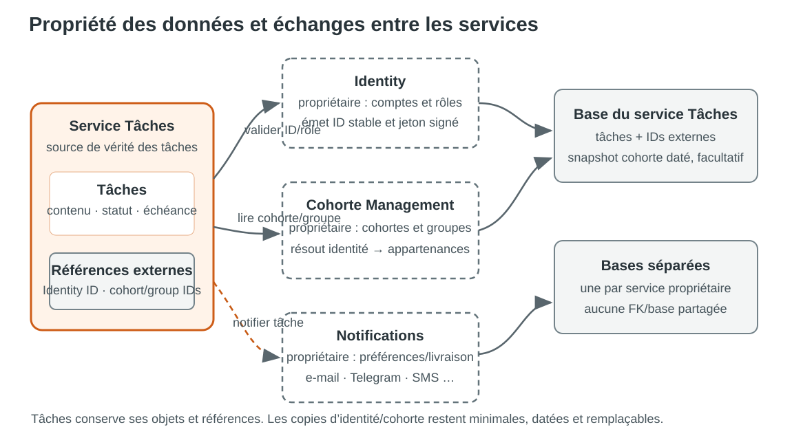

État des lieux du code, architecture cible, contrats d’intégration, outils et trajectoire de mise en œuvre.
Architecture actuelle et cible proposée
Le service Tâches gère le cycle de vie des tâches. Il s’appuiera sur trois services métier : Identity pour les comptes et rôles, Cohorte Management pour connaître la cohorte et le groupe de chaque utilisateur, et Notifications pour l’envoi par e-mail, Telegram, SMS et les canaux disponibles.
Le dépôt contient aujourd’hui un backend Django modulaire : tâches, utilisateurs, projets, équipes et notifications sont encore dans le même backend et la même configuration de base. La connexion aux trois services décrite ici est donc une cible à mettre en place ; leurs contrats et adresses ne sont pas présents dans le code consulté.
Pour afficher la cohorte et le groupe, Tâches récupère l’identifiant utilisateur stable fourni par Identity, puis interroge Cohorte Management côté backend. La réponse est vérifiée et renvoyée à l’interface. Un cache court peut éviter des appels répétés. Tâches conserve la propriété des tâches ; chaque service garde la propriété de ses données.
| Composant | Éléments constatés | Conséquence |
|---|---|---|
| Interface | React 19, Vite, React Router, Axios et Tailwind CSS sont déclarés dans le frontend. | Le navigateur appelle une API HTTP ; l’URL de base est actuellement locale et devrait être configurée par environnement. |
| API | Django 6.1, Django REST Framework et SimpleJWT figurent dans les dépendances. Les routes sont regroupées sous /api/. | JWT local existe. Le fournisseur d’identité commun et l’authentification interservices ne sont pas établis dans le dépôt. |
| Tâches | Task contient titre, description, projet, créateur, assigné, statut, priorité, échéance et dates. Statuts : TODO, IN_PROGRESS, BLOCKED, DONE. | Le service gère déjà le cycle de vie. L’affectation et l’accès sont contrôlés par l’appartenance à l’équipe du projet. |
| API de tâches | Un ModelViewSet CRUD est monté par routeur. Les routes incluent /api/tasks/ et /api/tasks/availability/. | Le préfixe exact résulte du montage de l’application tâches sous /api/. La pagination et le contrat OpenAPI ne sont pas établis ici. |
| Projets et équipes | Des modèles Project, Team et TeamMember sont dans le même backend. Le projet appartient à une équipe ; une tâche référence un projet. | Ces modules sont des dépendances locales actuelles, pas des services distants démontrés. |
| Utilisateurs | Le modèle local étend Django AbstractUser. Les tâches pointent vers cet utilisateur pour l’assignation et la création. | Pas d’identifiant global externe dédié repéré ; les claims JWT et le rapprochement avec une identité externe restent à définir. |
| Notifications et temps réel | La création et certains changements de tâches invoquent un service local de notifications. Channels et Daphne sont installés. | Une intégration locale est présente ; aucun broker d’événements interservices ni transport externe n’est démontré. |
| Données et exécution | PostgreSQL est configuré ; Docker Compose démarre PostgreSQL pour le développement. | Une base est visible pour l’application. L’isolation de bases par service doit accompagner une vraie séparation de déploiement. |
Le code consulté ne permet pas de confirmer la disponibilité, les URL, l’IAM, les contrats ou les technologies des services externes. Les services utilisateurs, projets, groupes, chat et notification ne sont donc pas considérés comme des dépendances distantes déjà établies.
Le schéma représente les frontières logiques trouvées dans le projet. Tous les modules Django listés tournent sous le même backend et partagent la base configurée ; leurs boîtes ne représentent pas des déploiements indépendants.

Orange plein : composants observés dans le dépôt. Les modules utilisateurs, projets, équipes et notifications sont internes au backend actuel.
| Service | Responsabilité | Ce que Tâches utilise | Échange prévu |
|---|---|---|---|
| Identity | Gère les comptes utilisateurs, leur état, l’authentification et les rôles. | Identifiant stable, état actif/inactif, rôles ou permissions nécessaires. | Jeton signé pour authentifier chaque appel ; endpoint Identity pour vérifier le compte ou rafraîchir les rôles si nécessaire. |
| Cohorte Management | Gère les cohortes, leurs groupes et les appartenances des utilisateurs. | ID et nom de cohorte, ID et nom de groupe, statut de l’appartenance. | Appel backend REST avec l’identifiant Identity de l’utilisateur ; lecture à l’affichage ou à l’affectation. |
| Notifications | Gère les préférences, modèles, fournisseurs et envois par e-mail, Telegram, SMS et autres canaux disponibles. | Type d’événement, identifiant de tâche, destinataire Identity et message minimal. | Commande API ou événement après création/affectation/achèvement ; Notifications décide du canal. |
Ces responsabilités suivent le périmètre demandé. Les URL, schémas de réponse, scopes, canaux effectivement activés et modalités d’accès restent à confirmer avec les équipes responsables.
Le navigateur appelle uniquement l’API Tâches. Le backend valide l’identité via le jeton Identity, consulte Cohorte Management pour le groupe et la cohorte, puis demande l’envoi à Notifications quand un événement de tâche le justifie.

Flèche continue : requête REST synchrone. Flèche pointillée : événement/commande asynchrone. Chaque service reste propriétaire de sa base.
Quand un utilisateur ouvre son profil, une tâche ou un filtre par groupe, le frontend appelle Tâches. Le backend extrait l’identifiant utilisateur fiable du jeton Identity, vérifie les droits, puis consulte Cohorte Management. Les IDs et libellés reçus sont renvoyés à l’interface pour afficher la cohorte et le groupe.


| Donnée | Propriétaire recommandé | Stockage côté tâches |
|---|---|---|
| Compte, identité, rôles | Identity | ID utilisateur stable ; claims de rôle signés. Cache du nom/avatar seulement pour affichage. |
| Cohorte et groupe utilisateur | Cohorte Management | IDs et snapshot daté facultatif pour accélérer l’affichage ; la source reste Cohorte Management. |
| Tâches et statuts | Service Tâches | Enregistrement canonique dans sa propre base. |
| Canal, préférences et état d’envoi | Notifications | Référence à l’événement/tâche ; ne pas dupliquer les préférences ou journaux de livraison. |
Utiliser l’identifiant stable d’Identity pour interroger Cohorte Management. Ne pas rapprocher les personnes par courriel ou nom d’utilisateur, car ils peuvent changer. Si un snapshot est nécessaire, enregistrer IDs, libellés, statut et date de synchronisation ; il reste une copie d’affichage, jamais une autorité d’accès.
GET /api/v1/users/{identity_user_id}/cohort-membership
Authorization: Bearer <jeton-de-service>
X-Correlation-ID: <id-requête>
200 OK
{
"user_id": "usr_123",
"status": "active",
"cohort": { "id": "coh_2026", "name": "Cohorte 2026" },
"group": { "id": "grp_04", "name": "Groupe 4" },
"updated_at": "2026-10-22T09:00:00Z"
}
À décider avec l’équipe : plusieurs appartenances actives, absence de cohorte/groupe, statuts possibles, pagination, TTL du cache, erreurs et versionnement. Le chemin ci-dessus est un exemple, pas une route existante.
La base de tâches ne doit contenir ni clé étrangère SQL vers la base distante, ni logique qui suppose que l’identifiant externe est un identifiant local auto-incrémenté. Les opérations de suppression/désactivation doivent suivre une politique convenue : conserver l’historique de tâche, rendre la référence inactive, empêcher de nouvelles affectations, et éviter de supprimer en cascade les tâches.
{
"event_id": "evt_...",
"type": "task.assigned",
"recipient_id": "identity-user-id",
"task_id": "task-123",
"data": { "title": "Préparer le rapport" }
}
Le service Notifications reste responsable du canal, du modèle et de l’état de livraison. Éviter d’envoyer des informations confidentielles dans le payload de notification.
| Mode | Avantages | Limites | Quand le retenir |
|---|---|---|---|
| REST synchrone | Simple à comprendre ; réponse immédiate ; validation fraîche à la création ou affectation ; compatible avec Django REST. | Couplage de disponibilité/latence ; besoin de timeout, quota, authentification, stratégie de panne. | Première version pour vérifier droits et références nécessaires à une commande. |
| Cache / synchronisation différée | Lectures rapides et meilleure tolérance aux pannes ; baisse de charge sur le service source. | Données potentiellement périmées ; invalidation, rafraîchissement et réconciliation à concevoir. | Libellés/profils d’affichage ou référentiels très lus ; ne pas l’utiliser comme autorité pour une permission sans règle de fraîcheur. |
| Événements asynchrones | Faible couplage temporel ; propagation de changements à plusieurs consommateurs ; utile pour notifications. | Infrastructure, observabilité, rejouabilité, ordre, doublons, schémas et cohérence éventuelle à gérer. | Quand le besoin de livraison différée ou de diffusion à plusieurs consommateurs est avéré, via broker déjà standard si disponible. |
Trajectoire conseillée : valider les contrats et faire REST pour les décisions synchrones ; mesurer les latences et répétitions ; ajouter un cache pour les données de lecture avec TTL convenu ; n’introduire des événements et un broker qu’avec un besoin métier/exploitation clair.
| Sujet | Mesure cible |
|---|---|
| Identity | Confirmer le format de jeton et les claims signés (identifiant stable, rôles). Valider signature/JWKS, issuer, audience, expiration et désactivation ; ne jamais accepter un rôle envoyé librement par le navigateur. |
| Service-à-service | OAuth2 Client Credentials ou mécanisme interne approuvé avec audience et scopes dédiés ; secrets dans un coffre, rotation ; TLS, et mTLS si standard disponible. |
| Autorisation | Vérifier le rôle, l’appartenance et l’accès à l’objet côté backend pour chaque lecture/écriture. Appliquer moindre privilège et éviter l’énumération d’identifiants. |
| Robustesse | Timeout par dépendance, reprises bornées avec jitter uniquement sur erreurs transitoires/idempotentes, coupe-circuit et plafonds. Retourner une erreur temporaire explicite si la vérification indispensable échoue. |
| Événements | Identifiant d’événement, clé de déduplication, consommateur idempotent, retry borné, file d’erreurs/rejeu, version du schéma et mesure du retard. |
| Observabilité | Identifiant de corrélation transmis entre appels ; logs structurés sans jetons ni données sensibles ; latence, taux d’erreur, disponibilité dépendance et traces distribuées selon la plateforme. |
| Données personnelles | Minimiser les champs reçus, limiter la rétention des snapshots et appliquer les règles d’accès/suppression convenues. Ne pas journaliser les payloads complets. |
| Outil | Rôle | Présence actuelle | Décision / usage proposé |
|---|---|---|---|
| Django REST Framework | Endpoints REST, sérialisation, permissions et validation des commandes de tâche. | Présent. | Conserver pour l’API du service. |
| Axios | Appels HTTP du navigateur vers l’API de tâches. | Présent. | Conserver ; base URL par environnement ; aucun secret technique côté client. |
| httpx ou requests | Client HTTP backend-à-backend ; timeouts, headers de corrélation et erreurs contrôlées. | Non repéré dans les dépendances. | Ajouter un seul client, selon le standard Python de l’équipe ; centraliser configuration et politique de retry. |
| OIDC / JWT + JWKS | Vérifier côté Tâches la signature du jeton Identity et lire l’ID stable/rôles. | SimpleJWT local présent ; fédération OIDC/JWKS non repérée. | À définir avec Identity. Éviter un appel réseau à chaque requête si la validation locale du jeton signé suffit. |
| API Cohorte Management | Résoudre l’ID Identity en cohorte(s) et groupe(s) pour affichage/filtrage. | Non configurée dans le dépôt. | Contrat à valider ; appeler depuis le backend, cache court facultatif. |
| API Notifications | Transmettre un événement de tâche ; service distant gère e-mail, Telegram, SMS et autres canaux. | Notifications locales appelées dans Django ; canaux externes non constatés. | À connecter via API idempotente ou broker validé ; ne pas coder les fournisseurs de canal dans Tâches. |
| OpenAPI / drf-spectacular | Contrat généré/documenté, revue de schéma et génération éventuelle de clients. | Non repéré. | À envisager tôt pour fixer le contrat public et vérifier les changements. |
| PostgreSQL | Stockage transactionnel des tâches et données possédées localement. | Présent ; configuration locale + Compose. | Garder dédié au service si les frontières microservices sont séparées ; migrations versionnées. |
| Docker Compose | Environnement de développement multi-conteneurs reproductible. | Présent pour PostgreSQL. | Étendre seulement aux dépendances de développement effectivement retenues. |
| Redis | Cache partagé, verrou ou support de tâches différées selon l’architecture. | Non repéré. | Optionnel ; définir invalidation/TTL et besoin avant adoption. |
| Celery | Exécuter des rafraîchissements ou livraisons hors requête HTTP. | Non repéré. | Optionnel avec Redis/RabbitMQ ; ne pas l’ajouter pour une intégration REST simple. |
| RabbitMQ / Kafka / broker standard | Transport d’événements asynchrones entre services. | Aucun broker interservice repéré ; Channels installé pour le temps réel. | Confirmer l’infrastructure existante ; Django Channels n’est pas le broker métier par défaut. |
| OpenTelemetry et observabilité | Traces interservices, métriques et diagnostic des dépendances. | Non repéré dans les dépendances. | Adopter le standard d’exploitation commun ; commencer au minimum avec logs structurés et métriques API. |
| Tests de contrat/API | Protéger la compatibilité du contrat entre producteur et consommateur. | Outil de contrat non repéré. | Choisir pytest/outil contractuel ou tests d’intégration déjà standard ; inclure erreurs et versions. |
| Étape | Livrable | Critère d’acceptation |
|---|---|---|
| 1. Cartographier les frontières | Liste des services réels, propriétaires de données, environnements et responsables. | Chaque domaine externe a un propriétaire confirmé ; modules locaux explicitement distingués des services réseau. |
| 2. Fixer les contrats | Spécifications OpenAPI/version, modèle d’identité, erreurs, scopes et disponibilité. | Exemples et scénarios d’erreur validés conjointement ; identifiant stable défini. |
| 3. Choisir le modèle de référence | Migrations pour identifiants externes et snapshot éventuel. | Pas de FK interbase ; contrainte d’unicité et stratégie des références inactives documentées. |
| 4. Implémenter le client backend | Client centralisé, configuration par environnement, credentials, timeout et corrélation. | Secrets absents du frontend/logs ; pannes distantes produisent des erreurs maîtrisées ; aucune reprise infinie. |
| 5. Exposer les opérations tâches | Endpoints protégés, contrat API, filtres et droits. | Un utilisateur ne lit/modifie que les tâches accessibles ; création vérifie projet/assigné auprès de leurs sources. |
| 6. Brancher l’interface | Affichage des attributs autorisés et états chargement/erreur. | UI ne contient pas de clé de service ; absence d’une donnée externe n’efface pas la tâche. |
| 7. Observer puis déployer | Dashboards, alertes, runbook, déploiement progressif et retour arrière. | Latence/erreurs de dépendance visibles ; seuils, propriétaires et conduite de panne définis. |
| Scénario | Comportement attendu |
|---|---|
| Utilisateur inconnu ou désactivé | Refus clair d’assignation ; aucune tâche partiellement créée. |
| Projet inexistant, archivé ou inaccessible | Refus conforme au contrat ; ne pas accepter un identifiant simplement parce qu’il est syntaxiquement valide. |
| Utilisateur sans cohorte/groupe | Réponse métier explicite « non renseigné » ; aucun groupe ou cohorte inventé. |
| Cohorte Management indisponible ou utilisateur inconnu | Erreur temporaire ou réponse de cache datée selon règle définie ; aucun rapprochement par courriel. |
| Appartenance modifiée | Le rafraîchissement fait apparaître le groupe courant dans le délai de fraîcheur convenu ; le cache expiré ne fait pas autorité. |
| Absence d’appartenance ou utilisateur hors équipe | Refus d’accès/affectation ; aucune fuite d’information sur les objets non autorisés. |
| Service distant lent ou indisponible | Timeout borné, identifiant de corrélation retourné/logué, réponse temporaire ; interface conserve son état et permet réessai contrôlé. |
| Cache expiré ou obsolète | La règle distingue les données d’affichage et les décisions d’autorisation ; rafraîchissement ou échec fermé selon criticité. |
| Requête répétée après coupure | Pas de doublon de tâche/notification si une clé d’idempotence ou une déduplication est promise. |
| Référence supprimée/désactivée après création | Historique de tâche conservé ; nouvelle affectation bloquée ; comportement de l’affichage défini. |
| Évolution API externe | Compatibilité contrôlée par version et contrat ; alerte en CI avant déploiement incompatible. |
| Permissions et isolation | Tests de lecture, création, mise à jour et suppression par rôle, membre, non-membre et administrateur. |
Ordre d’intégration conseillé : établir l’identité stable et les jetons avec Identity ; intégrer ensuite la lecture cohorte/groupe auprès de Cohorte Management ; enfin connecter Notifications pour les événements tâche assignée/terminée.
Tâches appelle les deux premiers services en REST pour afficher et vérifier l’identité/l’appartenance. Les notifications peuvent être émises via API au départ, puis de façon asynchrone si un broker standard est disponible. Chaque microservice garde sa base et ses règles métier.
Prochaine action : valider les contrats Identity et Cohorte Management, notamment le claim utilisateur et la réponse d’appartenance, puis définir le contrat événement/API de Notifications.
Fin du document · Version 1.1 · Architecture actuelle observée et cible proposée